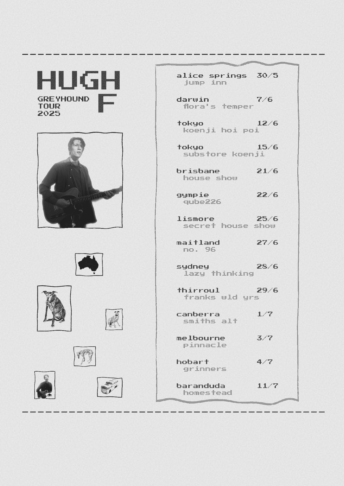
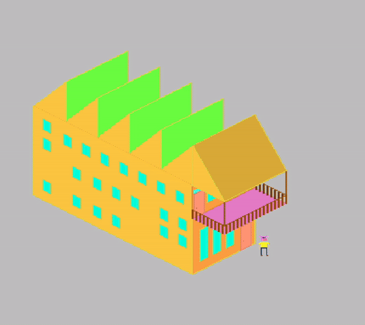

instagram // tiktok // itch.io // spotify SLIDES // spotify investments 1 // spotify investments 2 // apple music // youtube // bandcamp // merch // alex - booking // ☕️ ($)

instagram // tiktok // itch.io // spotify SLIDES // spotify investments 1 // spotify investments 2 // apple music // youtube // bandcamp // merch // alex - booking // ☕️ ($)

i'm hugh f, and i grew up near kiewa, on dudhuroa country.
my passion resides in singing folk stories, about dogs.
the work has been well-received online and onstage...
touring australia and the united states supporting legends like darren hanlon and chastity belt was good fun.
that was in late 2019 and early 2020.
maybe one day i will meet you and sing in your town.
i also specialise in crafting music and supplementary audio effects for
video games and
visual entertainment.
it is good to use sound to enhance the beauty of a world inside a screen.
this video game i am currently designing is called
adventure to the pony zone (working title). you will need to help people find their ponies (working story). it's a colourful game and it makes me happy.
if you want to chat about anything under the sun, feel free to drop me an
instagram direct message!!!
...alternatively, send me an email -
thanks for reading :)
hugh f
links // tour

click to play (desktop)